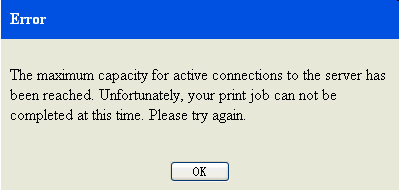

Dette emne viser, hvordan du udskriver et eller flere emner i informationscentret.
Om denne opgave
Udfør følgende trin i navigationsoversigten for at udskrive et eller flere emner:
- Klik på Udskriv emner(
 ) på værktøjslinjen for at få vist menuen.
) på værktøjslinjen for at få vist menuen. - Klik på Udskriv udvalgte emner.
- Hvis du vil udskrive det valgte emne og alle dets underemner, skal du klikke på Udskriv valgt emne og alle underemner for at åbne vinduet Vis resultat.
- Hvis du vil ændre sideopsætningen før udskrivning, skal du vælge -Sideopsætning i vinduet Vis resultat og revidere indstillingerne.
- Klik på Udskriv i vinduet Udskriv. Begrænsning:
MaxTopics og maxConnections er begrænsninger ved hurtig udskrivning. Disse parametre defineres i indstillingen for ressourceoptimering, før systemet startes.
Der vises et alarmvindue, hvis antallet af udskrevne emner overstiger definitionen af maxTopics.Figur 1. Eksempel på alarmvindue
- Klik på Ja for at fortsætte udskrivningen, hvis maxTopics-grænsen er i orden.
- Klik på Nej for at annullere udskrivningen.
Der vises et fejlvindue, hvis antallet af printerforbindelser overstiger definitionen af maxConnections.Figur 2. Eksempel på fejlvindue- Klik på OK. Prøv igen senere.